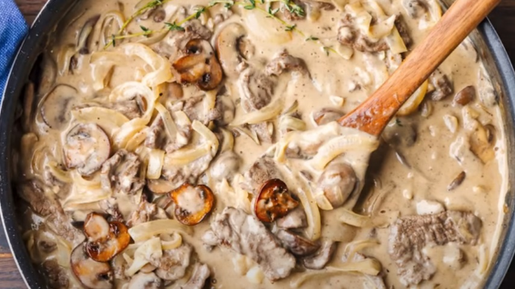

Beef Stroganoff

Description:
Indulge in a classic comfort dish with our Creamy Beef Stroganoff. Tender
strips of seared beef, sautéed mushrooms, and onions are smothered in a
luscious sour cream sauce, creating a harmonious blend of savory flavors.
Served over a bed of buttery egg noodles, this hearty meal is a timeless
favorite that never goes out of style. Perfect for a cozy family dinner or
a special occasion, our Beef Stroganoff is a delightful combination of
simplicity and sophistication that's sure to please any palate.
Ingredients:
- Flank steak 680g
- Worcestershire sauce 3tbs
- Salt 1tsp
- Pepper 1/4tsp
- Nutmeg 1/2tsp
- Allspice 2tsp
- Vegetable oil 2tbs
- Wide egg noodles 450g
- olive oil 6tbs
- Medium yellow onion x2
- Garlic cloves x6
- Flour 1/4 cup
- Dry white wine 1/2 cup
- Low sodium beef stock 3 cups
- Heavy cream 1/2 cup
- Cremini mushrooms 680g
- Butter 6tbs
- Sour cream 1/2 cup
- Dijon mustard 2tbs
- Pasta water 1 cup
- Flat leaf parsley 2tbs
- Salt and pepper to taste
Method:
-
Start by trimming off any excess fat from the steak and proceed to cut
the steak into 3-4cm long 1-2cm thick pieces against the grain.
-
Season the steak with the allspice 1tbs of salt and nutmeg. Mix
thoroghly and then place inside of a zip lock bag along with 1tbs of
worcestershire souce to marinade either 2-4 hours or overnight in the
fridge.
- Chop the onions into thick slices and set aside
-
Cut the mushrooms into big chunks 2-5 chunks per mushroom and set aside
- Mince the 6 cloves of garlic and set aside
-
Heat a nice big pan to medium heat and add 2tbs of vegetable oil and
make sure it gets spread around nicely.
-
Dry the meat off with a paper towel to get rid of any excess moisture
and then add enough to cover the pan.
-
Seer the steak until brown on both sides then set asid , (2-3 minutes
per side). Between batched make sure there is no excess moisture in the
pan, if there is then pat dry with a paper towel and add some more
vegetable oil.
-
After all the meat has been cooked get a new deep high wall non-stick
pan put the heat to about medium and add 2tbs of olive oil and then add
the mushrooms
-
Brown the mushrooms and add salt + pepper to taste. When browned set the
mushrooms aside
-
Wipe out the pan then lower the heat to just below medium and add 2-3tbs
of olive oil along with the onions, cook for about 10 minutes.
-
While the onions are cooking boil water in a pot for the noodles and add
2tbs of salt
- Cook the pasta noodles according to what the packaging
- When the onions get a bit brown (7-8 minutes) add 3tbs of butter
-
After the butter has almost fully melted make pocket in the middle and
add the garlic
-
Mix everything around then add the flour and cook until no longer
white.(1-2 minutes)
-
Add the wine and stir around to form a thick paste then add the stock,
bring up to the boil stirr thoroghly then drop the heat down to simmer
and add the 2tbs of dijon mustard and 2tbs of worcestershire sauce add
the mushrooms and also the steak into the pot.
-
Let the pot simmer for about 1 minute then add the
heavy cream and stir gently before adding the
sour cream. Let it simmer for 3-5 minutes.
- Taste and add any salt/pepper if needed
- When finished add pasta to a bowl and add the stoganoff on top